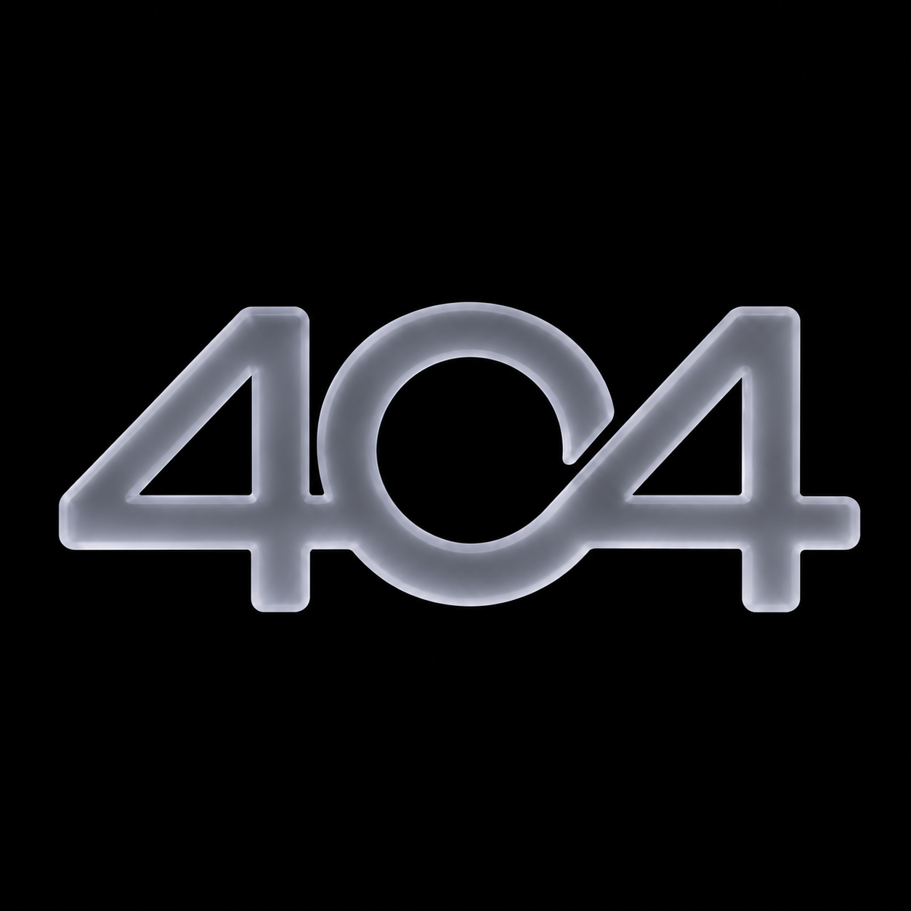

ID · 404-NC
Nico
Developer · QA · Workflows con IA
Disponible para proyectos
reality404 · acceso total
- BASE
- A Coruña, España
- ROL
- Developer con foco en calidad
- CICLO
- Código → QA → lanzamiento
- EXTRA
- Workflows y automatización con IA
- STACK
- React · TypeScript · Node · Python
Sobre mí
Lo que se lanza,
funciona de verdad.
Soy developer con foco en calidad. Trabajo el ciclo completo: escribo código, hago QA y aseguro que lo que se lanza funciona de verdad.
Diseño y automatizo workflows y aprovecho la IA para acelerar cada etapa del desarrollo sin perder control ni criterio.
Tira de la credencial · clic para ver el reverso